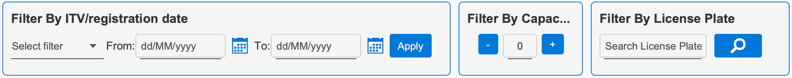
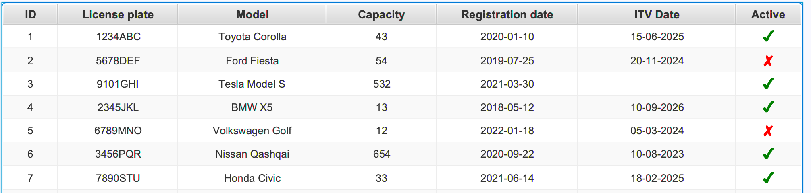
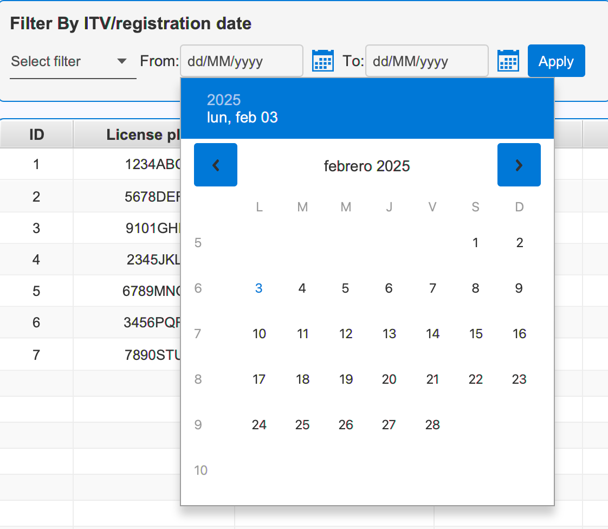

Getting Started
Welcome to the FleetIQ Vehicle Management System. This interface allows you to manage your vehicle fleet efficiently with features for adding, editing, and monitoring vehicles.
Tip: Start by familiarizing yourself with the search and filter options at the top of the screen to quickly locate specific vehicles.
Search & Filter Options
Available Filters:
- License Plate Search: Use the search text field to find vehicles by their license plate number (matrícula)
- Capacity Filter: Use the capacity controls (plus/minus buttons) to filter vehicles by their loading capacity
- Date Filters: Filter vehicles by ITV date or registration date using the date pickers
Vehicle Table Management
Editable Fields:
- License Plate (Matrícula): Click to edit the vehicle's license plate
- Model (Modelo): Edit the vehicle model information
- Capacity (Capacidad): Modify the vehicle's loading capacity (0-999)
- ITV Date: Update the vehicle's inspection date
- Active Status: Toggle the vehicle's active status
Date Filters
Filter Types:
- ITV Date: Filter vehicles based on their inspection dates
- Registration Date: Filter vehicles based on when they were registered
Note: You can filter by a single date or a date range by selecting both start and end dates.
Vehicle Operations
Available Operations:
- Add Vehicle: Create a new vehicle entry in the system
- Remove Vehicle: Delete selected vehicles and their associated shipments
- Edit Vehicle: Modify vehicle details directly in the table
Reporting
Generate detailed reports of your vehicle fleet using the Print Report button. Reports include all visible vehicle information in a formatted layout.
Contact Support
If you need additional assistance, please contact our support team:
- Email: fleetiqg5@gmail.com
- Phone: +34 123456789